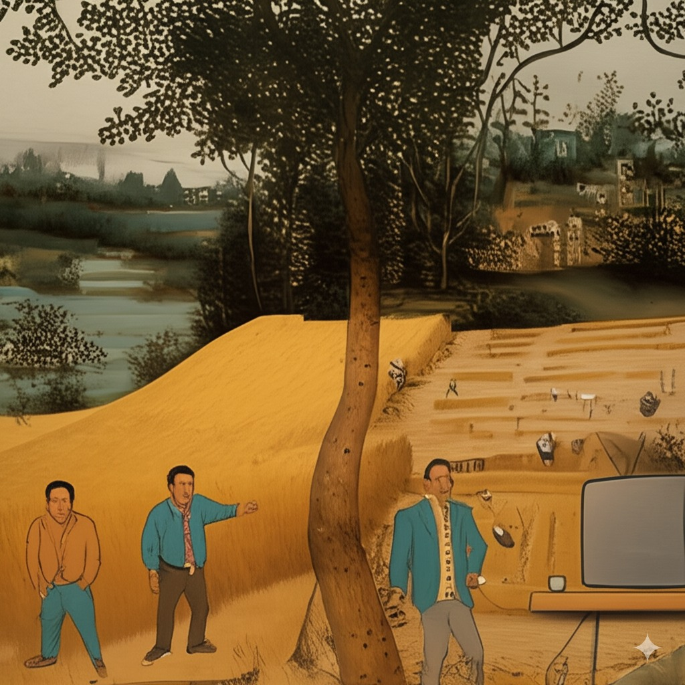
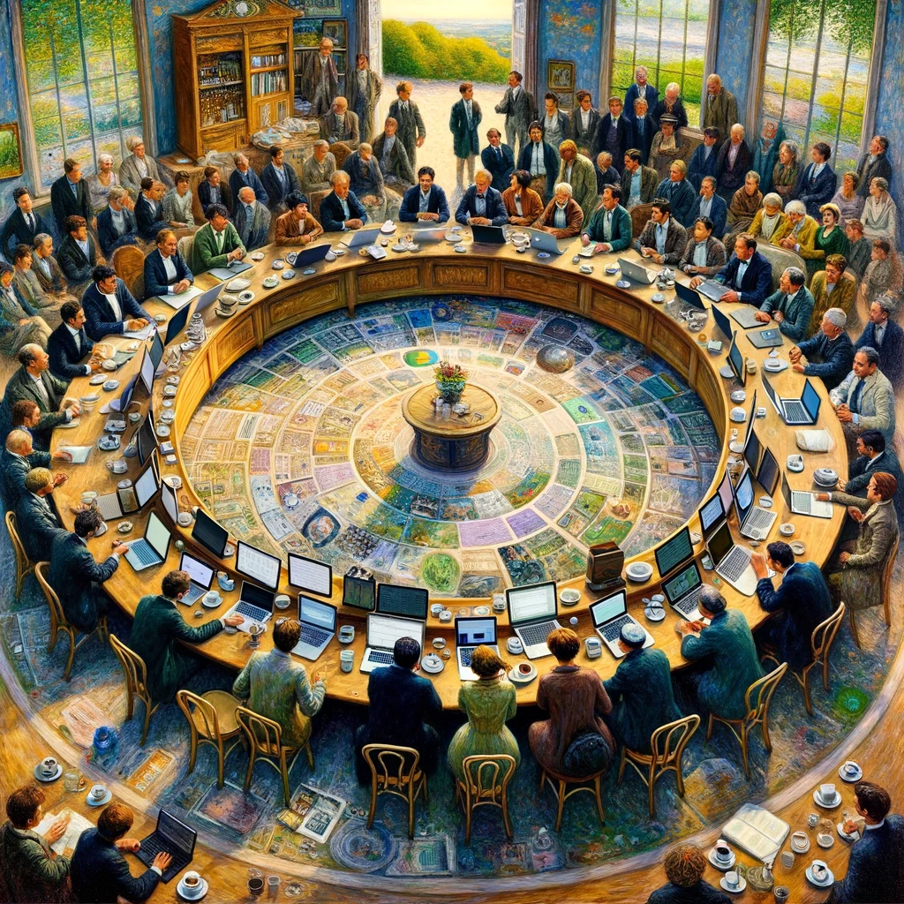

Interlude One
Home
About
Teaching
Research
Publications
Data
Web Apps
Second Hand Car Price Comparison Tool
Production Functions Shiny App
Economics literature explorer
Europe’s Regional Development Explorer
Fun stuff
My personal cookbook
Generative AI reports
How Rare-Earth Element Dependency Threatens the Global Wind Rollout
A couple of weeks back, I read an article in the FT about Ørsted, the big Danish offshore wind developer. Its stock was getting hammered. Part of the story involved project…
Apr 23, 2025
Jonathan Jayes

HISCO lookup
This is a post for me to come back to as a refrence. I always need to look up HISCO groups, and I have scraped and stored this information in this github repo but it would…
Mar 28, 2025
Jonathan Jayes
DRAFT: Analysis for a Solar PV & Battery System (South Africa)
I asked GPT-4.5 with deep research to investigate a solar system for me, in order to test its capabilities, inspired by a post by Timothy B. Lee titled in a somewhat…
Mar 11, 2025
Jonathan Jayes
Claude 3.7: React and Reactions
One of the best parts of my work as a PhD student is teaching. In a course on regional development in Lund, we cover data visualization and map-making. Both of these are an…
Feb 27, 2025
Jonathan Jayes
Transit Trek
For a long time, I have had an idea simmering in the back of my mind: could I get a large language model to collect transit data for European airports without me spending…
Feb 23, 2025
Jonathan Jayes
NeverTooSmall Couch Colours
I really enjoy watching the YouTube channel NeverTooSmall, which showcases cleverly designed small spaces from around the world.
Nov 19, 2024
Jonathan Jayes

A modern question and answer site: SCB Users Group
A post about creating a question and answer site for users of Statistics Sweden data
Nov 7, 2023
Jonathan Jayes
Geocoding: two ways
A post about geocoding place names using R and python to access the OSM and Google Maps geocoding APIs.
Oct 2, 2023
Jonathan Jayes
Transforming National Budget Documents into Queryable Knowledge
A post about automating the data retrieval process from PDF documents using LangChain and the OpenAI API.
Jul 5, 2023
Jonathan Jayes
The Economics of Instant Hot Water: Quooker vs Kettle
How long will it take for an instant hot water tap to save some money?
Jul 4, 2023
Jonathan Jayes
Building a YouTube Video Transcript Summarizer (with some help)
A post on what it means to be a data scientist in the age of such capable generative AI.
May 23, 2023
Jonathan Jayes
ChatGPT as translator and text wizard
A post showing how ChatGPT can be used to create structred data from text.
Mar 10, 2023
Jonathan Jayes
Map projections in R
A post on how to change projections for mapping and save out the new shapefiles.
Jan 31, 2023
Jonathan Jayes
Electricity generation per capita
A post on electricity generation per capita across the world since 2000.
Jan 30, 2023
Jonathan Jayes
Our World In Data choropleth
A post on how recreate the Our World In Data characteristic choropleth in R.
Jan 29, 2023
Jonathan Jayes
ChatGPT cooks me dinner
üç≤ Master the kitchen like a pro with the help of ChatGPT! üç¥ I tried it out and the results will blow your mind! ü§Ø Find out what happened when I asked a language model for recipe ideas and cooking instructions. üò≤ You won‚Äôt believe how delicious my Gammon and Vegetable Stew with Mint turned out! üçΩÔ∏è Don‚Äôt miss out on this must-read blog post! üëÄ
Jan 20, 2023
Jonathan Jayes
ChatGPT fills in for me as a blog post author
I ask ChatGPT to write a blog post in the same manner as one I wrote last week. The results will amaze you!
Dec 20, 2022
Jonathan Jayes
Coefficient plots in
ggplot
Drawing coefficient plots in R and
ggplot
.
Dec 15, 2022
Jonathan Jayes
LinkedIn style tables for personal websites
A post on how to us the {gt} table package to make tables for the about page of a pesonal website or blog.
May 20, 2022
Jonathan Jayes
Programmatically generate tabs in Rmarkdown
A walk-though for writing code that writes it’s own code.
Mar 4, 2022
Jonathan Jayes
Flavours of cocoa
An exploration of chocolate bar reviews
Feb 15, 2022
Jonathan Jayes
R vs Python? R & Python!
Mining the twitter archive of
Fathom Data
Jan 17, 2022
Jonathan Jayes
Students Speak
Text analysis of students’ diary entries during the Covid-19 lockdown in South Africa
Jul 6, 2021
Jonathan Jayes
Resources for Learning R and Mastering ggplot
A collection of videos and resources to get you started using R and the tidyverse for exploratory data analysis and visualization.
May 21, 2021
Jonathan Jayes
Mapping Sweden’s Regional GDP
Visualizing the relationship between population and regional GDP share in 1571, based on data from Enflo and Missiaia (2018).
May 6, 2021
Jonathan Jayes
Shipping and Scraping - Part 1 in a Series on Shipping
In this post I walk through scraping data on cargo ships from Wikipedia as part of a series on shipping. I make use of R, the rvest package for webscraping and the SelectorGadget tool for CSS selection.
Apr 8, 2021
Jonathan Jayes
Swedish trade in goods and exchange students
I wanted to see if there was an association between the volume of trade between a country and Sweden, and the number of exchange students that have come to Lund Univesity from there, this semester.
Feb 20, 2021
Jonathan Jayes
South African Car Colour Exploration
In this document I walk through creating a stacked area chart showing the evolution of car colour over time in South Africa. The data comes from nearly 45,000 adverts for cars that I scraped from Gumtree.
Nov 24, 2020
Jonathan Jayes
Car Price Comparison Tool
This web app helps South Africans gauge the median price for a second hand car. You can compare price by odometer reading, make and model, and province. Ad links are included in a table beside the output.
Oct 10, 2020
Jonathan Jayes
Recreating Our World In Data’s Beautiful Transistor Count Graphic
Scraping data from Wikipedia and recreating OWID’s figure with ggplot2.
Apr 8, 2020
Jonathan Jayes
Welcome to Interlude One
“Like all good fruit, the balance of life is in the ripe and ruin”
Mar 13, 2020
Jonathan Jayes
No matching items